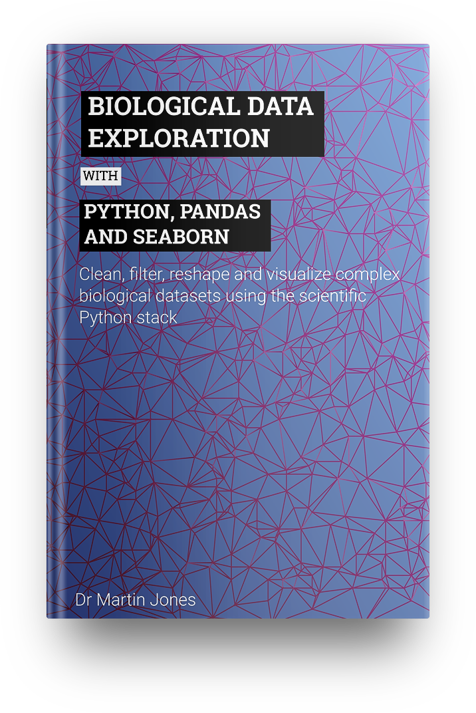

Welcome to Python for biologists
Here you'll find resources for learning to program in Python for people with a background in biology

Now published: Biological Data Exploration.
A complete guide to cleaning, manipulating and visualizing complex biological datasets with Python.
If you're looking for the exercise files for any of my books, click here.
If you want to get started with writing Python code take a look at the Python for biolgists online course.
If you're looking for instructor-led training courses, check out my training courses designed around biology and bioinformatics.
Browse the list of recent articles:
-
3 steps to readable code
11.05.2021 -
Counting non-DNA bases in a sequence
11.05.2021 -
Randomly sampling reads from a FASTQ file
11.05.2021 -
Simple sequence similarity search
11.05.2021 -
Sorting DNA sequences by length
11.05.2021 -
Machine learning for biology part one
11.05.2018 -
29 common beginner Python errors
03.12.2010 -
A six line genome assembler
03.12.2010 -
Five things I hate about teaching Python
03.12.2010 -
Inventing new animals with a neural network
03.12.2010 -
Python for complete beginners
03.12.2010 -
Tools for tabular data
03.12.2010 -
What you have in common with the Wright brothers
03.12.2010